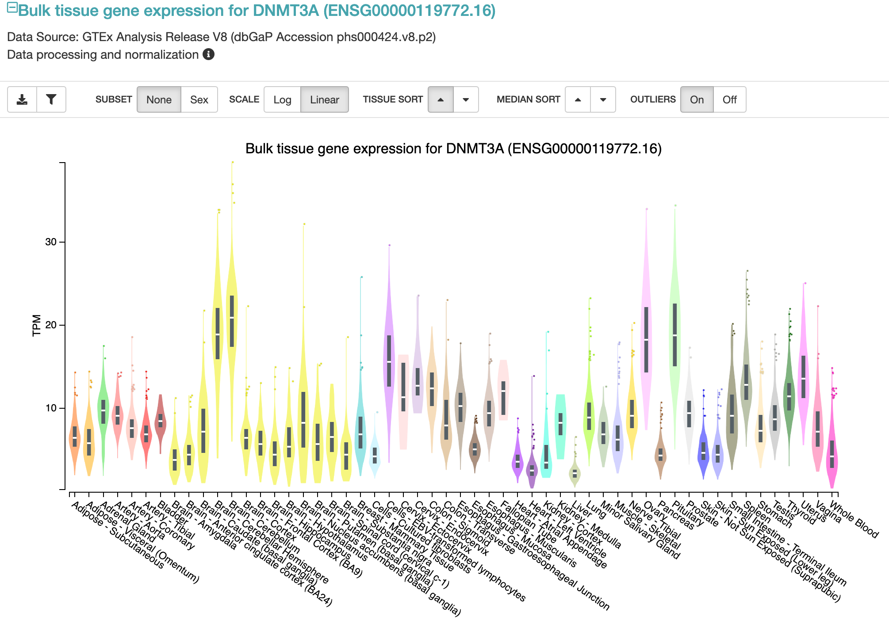

11.3 GTEx portal
The GTEx Portal provides an interface to summarize and visualize these data. In the search bar, we can look up a gene of interest and see:
- Violin plots depicting inter-individual variation in gene expression across all tissues
- Variants that impact expression or splicing of that gene

Fig. 3 (source). Distributions of gene expression across tissues for the DNMT3A gene.